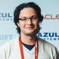

<!DOCTYPE html><html lang="en"><head><title>FHIR.ru</title><meta charset="utf-8"><link rel="stylesheet" href="https://cdnjs.cloudflare.com/ajax/libs/normalize/3.0.3/normalize.min.css"><link rel="stylesheet" href="https://maxcdn.bootstrapcdn.com/bootstrap/3.3.6/css/bootstrap.min.css" integrity="sha384-1q8mTJOASx8j1Au+a5WDVnPi2lkFfwwEAa8hDDdjZlpLegxhjVME1fgjWPGmkzs7" crossorigin="anonymous"><link rel="stylesheet" href="https://maxcdn.bootstrapcdn.com/font-awesome/4.4.0/css/font-awesome.min.css"><link rel="stylesheet" href="css/vendor/animate.min.css"><link rel="stylesheet" href="css/style.min.css"></head><body></body></html><div class="header"><div class="container"><p class="line-devider">|</p><nav><ul><li><a href="#community">Команда</a></li><li><a href="#society">Сообщество</a></li><li><a href="#hl7russia">HL7 Россия</a></li><li><a href="#projects">Проекты</a></li></ul></nav></div></div><div id="intro" class="intro">

<div class="container"><div class="row"><div class="col-md-6"><div class="row"><div class="col-md-6"><div class="intro-box"><a href="http://fhir-ru.github.io/overview-clinical.html" target="_blank" class="img-text"><p>Введение для <br>медиков</p></a></div></div><div class="col-md-5"><div class="intro-box"><a href="http://fhir-ru.github.io/overview-dev.html" target="_blank" class="img-text"><p>Введение для <br>разработчиков</p></a></div></div></div></div><div class="col-md-5"><div class="fhir-box"><p class="intro-text">HL7® Fast Healthcare<br>Interoperability Resources® </p><P class="fhir-rutext">Ресурсы Обмена Медицинской Информацией</P><p class="intro-btext">Новый стандарт обмена медицинской информацией от международной организации HL7®. FHIR создаётся с учётом стандартов и спецификаций HL7 второго и третьего поколений, CDA, задействует современные веб-технологии и направлен на практическую реализацию.</p>
</div>
</div></div></div></div><div class="persons"><div class="container test"><div class="row"><div class="col-md-6 core-persons"><p class="text-title">Редакционная <br>команда HL7® FHIR®</p><p class="core-team">Core Team</p><div class="person-box"><div class="media"><div href="#" class="media-left"></div><div class="media-body"><h4 class="media-heading">Грэм Грив</h4><p class="text-mute">Создатель FHIR, консультант, разработчик. Был председателем комитета HL7.</p></div></div></div><div class="person-box"><div class="media"><div href="#" class="media-left"></div><div class="media-body"><h4 class="media-heading">Ллойд Маккензи</h4><p class="text-mute">Разработчик, эксперт в области моделирования и передачи данных HL7.</p></div></div></div><div class="person-box"><div class="media"><div href="#" class="media-left"></div><div class="media-body"><h4 class="media-heading">Эвут Крамер</h4><p class="text-mute">Архитектор в области моделирования и обмена медицинскими данными.</p></div></div></div><div class="person-box"><div class="media"><div href="#" class="media-left"></div><div class="media-body"><h4 class="media-heading">Джош Мандел</h4><p class="text-mute">Врач, программист, ведущий архитектор платформы SMART.</p></div></div></div></div><div class="col-md-5 others-persons"><div class="person-box"> <p class="media-heading">Джеймс Агню</p><p class="text-others">Активно участвует в HL7 и разработке java-библиотеки для FHIR - HAPI.</p></div><div class="person-box"><p class="media-heading">Брайан Постлетвэйт</p><p class="text-others">Имеет многолетний опыт работы в различных средах.</p></div><div class="person-box"><p class="media-heading">Рене Спронк</p><p class="text-others">Оказывает образовательные услуги в сфере здравоохранения.</p></div><div class="person-box"><p class="media-heading">Дэвид Хэй</p><p class="text-others">«Евангелист FHIR», работает в компании «Orion Health» и HL7 Новая Зеландия.</p></div><div class="person-box"><p class="media-heading">Вьет Нгуен</p><p class="text-others">Терапевт, педиатр, специалист в области медицинской</p></div></div><div class="col-md-1 design-box"></div></div></div></div><div class="evolution"><div class="container"><p class="text-title">Эволюция HL7® FHIR®</p></div></div><div id="blog" data-stellar-background-ratio="0.5" class="blogs"><div class="container"><div class="row"><p class="text-title">Сообщество FHIR®</p></div><div class="row">     <div class="col-md-4"><div class="blog-box"><a href="http://www.healthintersections.com.au/" target="_blank" class="blog-header">Health Intersections</a><p class="blog-btext">Блог Грэма Грива, создателя FHIR®</p></div><div class="blog-box"><a href="http://thefhirplace.com/" target="_blank" class="blog-header">The Fhirplace</a><p class="blog-btext">Блог Эвута Крамера</p></div></div><div class="col-md-4"><div class="blog-box"><a href="http://fhirblog.com/" target="_blank" class="blog-header">Hay on FHIR</a><p class="blog-btext">Блог Дэвида Хэя</p></div><div class="blog-box"><a href="http://healthcaresecprivacy.blogspot.com/search?q=FHIR&amp;max-results=20&amp;by-date=true" target="_blank" class="blog-header">Healthcare Security / Privacy</a><p class="blog-btext">Блог Джона Моерке</p></div></div><div class="col-md-4"><div class="blog-box"><a href="http://motorcycleguy.blogspot.com.au/search/label/FHIR" target="_blank" class="blog-header">Healthcare Standards</a><p class="blog-btext">Блог Кейта Буна</p></div><div class="blog-box"><a href="http://www.fhir-biztalk.com/" target="_blank" class="blog-header">BizTalk on FHIR</a><p class="blog-btext">Блог Говарда Эдидина</p></div></div></div></div></div><div class="society"><div class="container"></div></div><div class="video-intro"><div class="container"><div class="row"><div class="col-md-4"><iframe src="https://player.vimeo.com/video/106255531?byline=0&amp;portrait=0" width="370" height="210" frameborder="0" webkitallowfullscreen mozallowfullscreen allowfullscreen class="img-rounded"></iframe></div><div class="col-md-4"><iframe src="https://player.vimeo.com/video/146477763?byline=0&amp;portrait=0" width="370" height="210" frameborder="0" webkitallowfullscreen mozallowfullscreen allowfullscreen class="img-rounded"></iframe></div><div class="col-md-4"><iframe src="https://player.vimeo.com/video/112791998?byline=0&amp;portrait=0" width="370" height="210" frameborder="0" webkitallowfullscreen mozallowfullscreen allowfullscreen class="img-rounded"></iframe></div></div></div></div><div class="persons-ru"><div class="container"><a name="hl7russia"></a><div class="row"><div class="col-md-6"><p class="second-title text-title">HL7® FHIR® в России</p><p class="text-muted personru-btext">В разработке и продвижении стандарта HL7® FHIR® в России участвует российская команда Health Samurai, являющаяся членом организации "HL7 Россия". Health Samurai принимает участие в проводимых HL7® конференциях по FHIR® и оказывает консультирование в области практического использования стандарта HL7® FHIR® при разработке медицинских информационных систем.<div class="personru-box"><div class="media"><a href="https://plus.google.com/+НиколайРыжиков" class="media-left"></a><div class="media-body"><h4 class="media-heading">Николай Рыжиков</h4><p class="media-text">Технический директор,<br>(CTO). Health Samurai.</p></div></div></div><div class="personru-box"><div class="media"><a href="https://plus.google.com/+MikhailRyzhikov" class="media-left"></a><div class="media-body"><h4 class="media-heading">Михаил Рыжиков</h4><p class="media-text">Исполнительный директор<br>(COO). Health Samurai.        </p></div></div></div><div class="personru-box"><div class="media"><a href="https://plus.google.com/+МихаилЛапшин" class="media-left"></a><div class="media-body"><h4 class="media-heading">Михаил Лапшин</h4><p class="media-text">Старший разработчик. <br>Health Samurai.</p></div></div></div><div class="personru-box"><div class="media"><a href="https://plus.google.com/+AlexandraSemenova" class="media-left"></a><div class="media-body"><h4 class="media-heading">Александра Павлышина</h4><p class="media-text">Инженер-программист,<br>переводчик. Health Samurai.</p></div></div></div></p></div><div class="col-md-6"><p class="text-title">HL7® Россия</p><div class="personru-box"><div class="media"><a href="#" class="media-left"></a><div class="media-body"><h4 class="media-heading">Швырев Сергей Леонидович</h4><p class="media-text">Президент HL7 РОССИЯ</p></div></div></div><p class="media-text hl7-btext">В 2009 году была создана некоммерческая организация Развития и стандартизации обмена, управления и интеграции электронной медицинской информации «ЗУС «Евразия». В её создании приняли участие Российский национальный иccледовательский медицинский университет им. Н.И. Пирогова и ведущие государственные и частные структуры, работающие в сфере информационных технологий в здравоохранении. Руководитель - Сергей Леонидович Швырев, специалист в области практической разработки и интеграции медицинских информационных систем.(НПЦ ЭМП Департамента здравоохранения города Москвы, Департамент информационных  технологий и связи Минздрава России, Страховая группа «Спасские ворота», МГОБ№ 62 города Москвы, МИАЦ РАМН, IT-Компании «Программы и комплексы», «Медицинские информационные технологии»). Президентом HL7 Россия на данный момент является руководитель научно-исследовательской лаборатории ГБОУ ВПО РНИМУ им. Н.И. Пирогова Минздрава России Сергей Леонидович Швырев, специалист в области практической разработки и интеграции медицинских информационных систем.</p>
</div></div></div></div><div class="prefooter"><p class="pull-right hs-icons"><span class="links"><a href="https://medium.com/@health_samurai" class="icon-link"><i class="fa fa-medium"></i></a><a href="https://twitter.com/health_samurai" class="icon-link"><i class="fa fa-twitter"></i></a><a href="https://plus.google.com/u/0/106276017181324261891" class="icon-link"><i class="fa fa-google-plus-square"></i></a></span><a href="http://health-samurai.io/" target="_blank" class="hs-link"><span class="copyright pseudoline">© 2015 Powered by</span><span class="hs-team pseudoline">Health Samurai Team</span></a></p></div><script src="js/vendor/jquery/jquery.min.js"></script><script src="js/vendor/jquery.stellar/jquery.stellar.min.js"></script><script src="js/vendor/parallax/parallax.min.js"></script><script src="js/vendor/wow/wow.min.js"></script><script src="js/main.min.js"></script>

